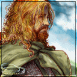

Forums galactiques > Taverne galactique : lieu de discussion informel > Machine a café [Rp!]
Pages : 1 2 ... 412 413 414 ... 443 444
| Siegfried Réputation à la taverne : 237  03/01 ETU 23:12  | Score : 1 Détails La nuit est tombée, la bise souffle dehors,
et Siegfried se dirige d'un pas rapide vers la salle, afin de pouvoir s'y réchauffer et s'y désaltérer avec un bon café... Il tourne à l'angle de la rue et voit l'enseigne, ainsi que la lumière irradiant de l'intérieur par la baie vitrée... Il ouvre la porte de la taverne, et s'engouffre précipitamment à l'intérieur... Relevant la tête, il aperçoit Leorique, un de ses vieux amis, et soudain : le choc ! En face de lui se tient Sara, si longtemps disparue... Il reste là, tétanisé par la surprise, ne pouvant que balbutier quelques bribes... - " Euh... bon... bon... bonsoir..." | ||
| Leorique Réputation à la taverne : 191  03/01 ETU 23:19 | Score : 1 Détails Leorique sourit joyeusement en voyant Hétag
« Bonsoir messire Hétag, cela faisait longtemps; comment vous portez vous ? » il se demande un instant ce que contiennent les caisses puis il hausses des épaules « De l'alcool ? Hum , non merci, je n'aime pas ça , mais merci de la proposition » il murmure un instant pour lui même quelque chose dans le vide « Je pense que ... » il s'arrete en entendant la porte s'ouvrir et voit arriver Siegfried, il l'observe un moment, son attitude semblant se faire un petit peu plus froide qu'il ne l'est d'habitude. Il secoue la tête puis hausses des épaules « Bonsoir ... Messire ... Siegfried .. » il insiste un léger instant sur le messire . | ||
| -[Aerÿnn]- Réputation à la taverne : 2661  03/01 ETU 23:26 | Score : 1 Détails Hétag rit franchement au refus de l'albinos et lui fait une accolade :
"Oh allez... rien qu'un p'tit verre ! Ca vous réchauffera ! Haha, je blague, je sais bien que vous n'aimez pas.. Sinon je suis en forme merci d'vous soucier !" Puis regarde Sara, qui n'avait toujours pas réagi. Celle-ci d'abord étonnée de la visite, rassurée ensuite.. Avait viré à une étrange mimique, quand la porte s'était ouverte. L'homme se retourne et remarque Siegfried. Hétag serre le poing puis avise Sara qui semblait fondre. "Bon.. pas maintenant..." murmura-t-il alors "Sacré Sieg... tu prendras bien un verre avec moi ? En attendant la réponse de ta chère et tendre... Fais ton choix, il y a quelques bouteilles..." | ||
| Soucie Réputation à la taverne : 133  03/01 ETU 23:29 | Score : 1 Détails Soucie entra à la MAC, mais hésita en voyant le nombre assez élevé de personnes. Elle continua finalement, et s'assied à la table la plus éloignée des autres commandants, comme à son habitude.
Elle sortit son livre et continua à le lire. | ||
| Siegfried Réputation à la taverne : 237 03/01 ETU 23:34 | Score : 1 Détails Siegfried sursaute... on l'interpelle...
C'est si soudain, si inattendu... Les idées s'entrechoquent, sont confuses... - " Euh... non merci, un café d'abord... ce serait préférable... enfin je crois..." Il regarde le général, Leorique, puis Sara, qui semble éviter son regard, et s'approche lentement du groupe... " Comment allez-vous, tous?... Depuis le temps..." | ||
| Quaideluz Réputation à la taverne : 411  03/01 ETU 23:38 | Score : 1 Détails Il courait comme un fou, il n'avait le temps de s'excuser auprès des gens qui bousculait. En tête, un seul message à délivrer d'urgence. OUI, c'était très urgent lui avait dit l'ambassadeur.
Depuis trois quarts d'heures, il courait, non, il filait, essayant à chaque pas d'allonger sa foulée malgré ses deux points de cotés, malgré sa gorge en feu, malgré les battements de son coeur. Enfin, il vit la porte et s'écroula en plein milieu de la pièce. Le jeune messager avait buté sur quelque chose.Il se releve et se met à genoux. D'une voix un peu haché, il répète son message appris par coeur en une seule dictée De la part du commandant Quaideluz, je vous souhaite une Bonne et Merveilleuse Année à tous les présents et présente dans la salle. Malgré l'envie de partager une tasse de café avec vous, je ne peux pas me déplacer en ce moment et m'excuse pour ce type de message Encore une fois, je vous souhaite Meilleurs voeux. Le messager se mit debout et repartit dans la nuit. | ||
| Leorique Réputation à la taverne : 191 03/01 ETU 23:40 | Score : 1 Détails L'albinos regarde un instant, puis hausses des épaules en secouant la tête, un peu froid.
« Je vais bien , je vais bien si on peut dire ainsi je suppose. Oui ... » il reste un instant silencieux « Et vous même ? Enfin ... » il fait signe a Siegfried de venir s'asseoir, puis s'arrête un moment en remarquant une personne qu'il n'avait pas encore aperçu dans la salle. Il incline la tête lui fait un léger signe « Oh , bonsoir dame Soucie, vous vous portez bien ? ». il la dévisage un moment, puis se tourne vers le messager et écoute le message en souriant, en prenant mentalement note d'envoyer un message a Quaideluz | ||
| Goron Réputation à la taverne : 1306  03/01 ETU 23:40 | Score : 1 Détails Les portes de "la machine à café" s'ouvrirent...
apparut, alors, Wyatt, escorté de deux officiers cardassians, un regard froid chargé d'un sentiment malsain, indescriptible. Il se dirigea droit vers Hétag, sans mot dire, jeta un rapide sourire à Soucie, continuant vers le général. "Hétag, je te salue, tu es surpris à voir ton regard ... Moi... Ici... Je sais, c'est une longue histoire, fidèle général... as-tu bien torturé et exécuté l'assassin de ma mère ? Je souhaiterai récupérer la dépouille d'Annyëa... je souhaiterai avoir la chance de pleurer sa disparition... Car... cher général, vous m'avez ôté ce dernier adieu à celle-ci..." Wyatt regarda fixement Hétag. Le général sentant des picotements le long de la nuque... | ||
| Ace Azzamen Réputation à la taverne : 1199  03/01 ETU 23:47 | Score : 3 Détails Crrr - clac
" Salut, Wyatt ... Ca faisait un bail dis-moi ..." ///// Ace Azzamen arriva, 45 magnum au poing avant de le rengainer, percuteur armé et cran de sécurité enlevé. ///// " La dernière fois, tu m'as eu par surprise mais on m'a filé une petite solution pour éviter tes trucs mentaux, on va voir si c'est efficace. Alors, moi, assassin ... Ma tête mise à prix J'savais bien que la bande de semi-tarés qu'est tombée sur Kalich voulaient me parler ... Dommage pour eux, vous retrouverez leurs restes dans les boites d'alumettes qu'il y a dehors. La prochaine fois que tu voudras te mesurer à moi, fais-le d'homme à homme, sans utiliser tes pouvoirs. Et là, peut-être vaudras-tu quelque chose. J'ai fait ce qu'a voulu ta mère. D'ailleurs, Wyatt. Annyëa voulait mourir car elle disait t'avoir shooté au fusil de chasse. T'as l'air bien en forme pour un mort. Et surtout, bien adulte." ///// Il laissa traîner la phrase, à mesure qu'il s'avançait à reculons vers le mur, les yeux rivés sur Wyatt, la paume sur la crosse du 45. Il s'adossa au mur et embrassa la salle d'un rapide regard avant de le river à nouveau sur Wyatt ///// | ||
| -[Aerÿnn]- Réputation à la taverne : 2661 03/01 ETU 23:55 | Score : 1 Détails Voyant une inconnue, qui était fort charmante, Hétag la salue rapidement.
"Bonsoir Madame/Mademoiselle ?.." Mais il n'a pas le temps d'entamer la conversation que voici un gars, haletant, venait de délivrer un message de Quaideluz. Hétag sourit et remerçie l'homme qui repartait déjà... Au même moment, Sara se lève et se sert un verre de bourbon. Sans jeter un regard à Siegfried, elle s'approche de la fenêtre, silençieuse, l'air lointain... Quand soudain son coeur se serre... Quelqu'un s'approchait. Non, plusieurs personnes. Elle regarde l'homme, semblant être le 'chef', entrer. Qui se dirigea directement vers Hétag... Assassin... Annyëa... Ma mère... ? Sara se retourne et regarde l'homme attentivement. Sentiment étrange... Elle ne peut détourner son regard de Wyatt. Tandis que le Général, qui ressentait quelques picottements : "Non... Wyatt.. Je ne l'ai pas..." Hétag ne finit pas... Alors qu'Ace Azzamen venait d'entrer, il tombait à pic ! Wyatt..? se demandait Sara, portant sa main sur son coeur... | ||
| Goron Réputation à la taverne : 1306 03/01 ETU 23:56 | Score : 2 Détails Wyatt se retourna, fixant Ace Azzamen, un sourire malsain, apparraissant sur le visage, son regard remplit de haine et heureux à la fois, se concentrant sur Ace Azzamen. Les deux officiers cardassians s'interposant entre Wyatt et l'arme d'Ace Azzamen.
"Te voilà enfin...Toi... Celui qui a froidement abbattu ma mère... Nous voilà donc face à face... me pointant avec... cette arme.... que tu es en train d'amener à ta tempe et ensuite, tu vas appuyer sur la détente pour te suicider... Oui tu es triste, ta vie a été misérable et tu comptes en finir ce soir..." | ||
| Ace Azzamen Réputation à la taverne : 1199 04/01 ETU 00:06 | Score : 5 Détails CLIC
" Comment-ça , clic ?" ///// Dit Ace après avoir appuyé sur la détente, le canon collé sur sa tempe. Il regarda son arme et essaya encore deux ou trois fois de ce loger une balle entre les deux oreilles. ///// " AAAAAHHHH MEEEEEERRRRDDEEEEEUUUUUHHHHHHH ! Pas de bol, j'avais oublié les balles. Alors ça, c'est ballot. Rha zut alors. Bon, plus sérieusement, ptit père, dis voir. T'étais là quand ta mère est morte. C'est toi qui lui a évité une mort lente et douloureuse ? C'est pas toi qui a porté son corps inerte dans tes bras, ce n'est pas toi qui a senti les derniers battements de son coeur, ce n'est pas toi qui veille sur son corps jour et nuit. ALors, tu n'as aucun droit sur ta mère, fallait y penser avant, mon gars. " ///// Ace avait dit tout cela d'une voix claire, calme et détachée. Il regardait Wyatt, avec calme. ///// " Maintenant que j'ai tué ta mère. C'est ma responsabilité de lui assurer un repos éternel. Et je pense que ce fardeau est plus le mien que le tien. D'ailleurs comment ça se fait que tu sois déjà adulte alors que la mort de ta mère remonte à peu et que c'est un presque un nourrisson qu'elle a défoncé à la chevrotine ?" | ||
| Soucie Réputation à la taverne : 133 04/01 ETU 00:11 | Score : 0 Détails Soucie se tassa imperceptiblement dans son coin, et murmura, d'une voix à peine audible:
C'est pas humain... Fais attention Ace. | ||
| -[Aerÿnn]- Réputation à la taverne : 2661 04/01 ETU 00:12 | Score : 1 Détails Hétag s'était reculé et avait rejoint Sara.
Elle qui n'était pas au courant, devait être secouée. "Ma puce, ça-va aller ?.." lui demanda-t-il discrètement, en posant sa main sur son épaule. Quant à la jeune femme, elle regardait tour à tour rapidement Hétag, Siegfried, Ace, Leorique, l'inconnue au fond, revenant sur Wyatt... "Co.. comm... comment est-ce possible ?..." lâcha-t-elle Sara avale son verre d'une traite, attentive aux prochains propos des deux hommes... Un pinçement au coeur, une douleur sourde commençait... Elle grimace un peu. | ||
| Leorique Réputation à la taverne : 191 04/01 ETU 00:16 | Score : 0 Détails Mal , malsain ... L'albinos pouvait le sentir d'ici, Ce Wyatt était ... maléfique. Il le regarde sombrement. Pour une fois, l'air d'un prédateur il toise Wyatt.
Sortant son médaillon en forme de pleine lune, qui commence a luire doucement, comme conscient du la tension qui anime son possesseur. L'albinos grimace un moment, résistant a l'appel qui monte pourtant presque irrésistiblement en lui. Il regarde son médaillon un moment dans ses mains, espérant tout de même qu'il n'aura pas a utiliser ... ça ... mais qu'il le faudra sans doute vu la tension accumulée et la haine qui semble jaillir de wyatt . | ||
| Goron Réputation à la taverne : 1306 04/01 ETU 00:16 | Score : 1 Détails Wyatt se dirigea vers Ace Azzamen tout en lui répondant.
"Où j'étais ? Je faisais en sorte que les flottes cardassianes, quittaient votre galaxie... Je faisais en sorte que l'agent Hotfoot ne puisse plus vous nuire... Je faisais en sorte de sauver cette galaxie... Ensuite de ma légitimité à récupérer le corps de ma mère, c'est mon droit..." Wyatt rapprocha son visage de celui de Ace et hurla. "Je suis qui ! D'aprés toi !! Un inconnu qui vient réclamer son lot !! Annyëa était ma mère !! Et comme tout fils légitime, je viens récupérer son corps !!! Est-ce clair ?" Reprenant une posture droite, Wyatt reprit calmement. "Et en quoi cela te concerne que je sois adulte maintenant ? Mets ça sur le compte de la science... Tu vivras car tu es le seul à savoir où est la dépouille de ma mère... Je serai plus clément avec toi si tu me la remets sans discuter..." | ||
| Ace Azzamen Réputation à la taverne : 1199 04/01 ETU 00:21 | Score : 8 Détails " Avant, j'ai une chose très importante à te demander.
Une chose ca-pi-ta-le pour la suite de notre discussion ... " ///// Le regard de Ace se fit plus perçant, il s'étrécit comme pour sonder le fond de l'âme de Wyatt. La tension monta de manière palpable, l'air devint oppressant, lourd, suffocant puis il sortit vivement quelque chose de rond de la taille d'une pièce de 1 leem. ///// " Thé ou café ? " | ||
| Siegfried Réputation à la taverne : 237 04/01 ETU 00:25 | Score : 2 Détails Siegfried s’assied, pris au dépourvu, accablé…
Il avait quitté quelques instants ses dossiers pour se détendre, et tout lui tombait dessus en même temps, au même instant… Où qu’il aille, il fallait que les tensions le poursuivent… L’Oligarchie, les réformes qu’il avait contribué à faire avancer, la gestion des flottes des différents barons, et maintenant les comptes à rendre entre Wyatt et Ace Azzamen et des retrouvailles qui se promettaient tumultueuses avec sa compagne… Sara évitait son regard, se faisait froide et distante à son égard, Ace Azzamen et Wyatt se querellaient au sujet d’Annyëa, ce douloureux souvenir qu’il aurait tant voulu éviter… Surveillant du coin de l’œil de l’œil les deux hommes, Siegfried se dirige vers les deux flÿnnaens, prêt à s’interposer si les choses devaient encore plus dégénérer… « Mais ça ne finira donc jamais ? dit-il dans un souffle… Ca promet d’être joyeux… » Puis, avisant le général et Sara… « Où étiez-vous passés ? Je me faisais un sang d’encre… » « Une chose ca-pi-ta-le pour la suite de notre discussion… » Voilà, la politique reprenait le premier rang… Il allait encore falloir débattre… | ||
| Goron Réputation à la taverne : 1306 04/01 ETU 00:26 | Score : 0 Détails Wyatt dégaina son arme de poing et alla l'appuyer sur le frond de Ace Azzamen.
La tension était à son comble, le sourire malsain et sadique de Wyatt dégageait un sentiment de haine que chaque personne pouvait palper dans la salle. "Café..." Wyatt rengaina son arme, tout en gardant son sourire malsain et fixant Ace. Il tourna son regard vers Soucie et lui sourit, lui faisant signe, lui adressa la parole. "Salutation jolie demoiselle Soucie... Je vous l'avais dit que nous nous retrouvions bien assez tôt..." | ||
| -[Aerÿnn]- Réputation à la taverne : 2661 04/01 ETU 00:27 | Score : 1 Détails Le Général ne réponds pas à Siegfried...
Il était plié de rire à entendre la question ca-pi-tale d'Ace Azzamen, puis tomba à terre l'instant d'après... Riant de bon coeur, se tenant le ventre... se relevant rapidement... "Wahahaaaaaaa ! L'est bien bonne celle-là ! Rhaaa..." Tandis que Sara, à l'opposé de son collègue, avait toujours l'air sérieux... Elle s'avançe vers Wyatt, cet inconnu portant le nom du fils d'Anny... La douleur s'intensifie à chaque pas. Sérieux A., t'a fait fort là ^^ Merci pour ce moment grandiose ! :D |
Pages : 1 2 ... 412 413 414 ... 443 444
Forums galactiques > Taverne galactique : lieu de discussion informel > Machine a café [Rp!]